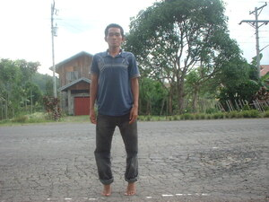

kanat 
/kanat/
v_rt.
“stretch_out”
vi.
for someone (egkanat, agent, eg><ø-) to stretch out by standing on ones toes, as if to reach something high
Ka malepet egkanat iya ke due kalibulungan su eyew egpakakita sikandin.
The dwarf one will really stand on toes during time of presentation so that he could see.
Wrd.Gloss: stretch_out
Ant. sikal
O. Syn. kingking
Eng. stretch out; stand on toes; tiptoe
Online dict status: -
Usage level: M
vt.
for someone (egkanat, agent, eg><ø-) to stretch out something elastic (egkanaten, theme, eg><en-)
Wrd.Gloss: stretch_out
Egkanat ka gumaa su in-ugpaan te anit kahi pa te apù ku.
My grandmother said that rubber will stretch for it is owned by the anit.
Eng. stretch out; expand
Online dict status: -
Usage level: M
Updated by: RJH,TME
Last updated: 13/Oct/2009
This page last updated: 19/May/2012
Copyright © 2009-2010, Matigsalug Language Christian Association, Inc